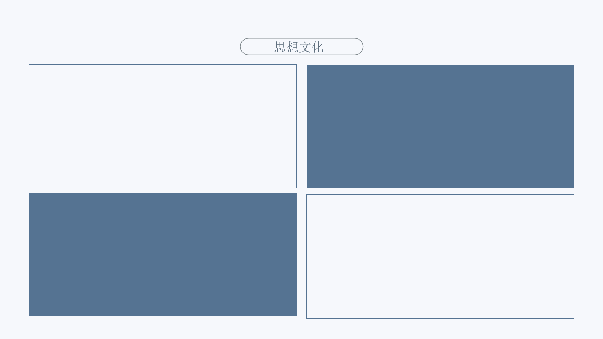

儒家文化:
儒家文化的核心在于倡导道德修养、家庭和睦与社会和谐。其中“仁”被视
为最重要的德行，意指对他人的关爱和善行。除此之外，“礼”的概念也十分
关键，它不仅涉及礼节、礼貌，还包含了一整套规范人际关系和社会行为的准
则。其他重要概念包括忠、孝、悌（兄弟间的友爱），以及智、信等美德。
道家文化:
主要思想
道法自然：道家认为“道”是宇宙万物产生和发展的根源，是自然
规律和人类生活准则的综合体。
无为而治：道家提倡顺应自然，不做过多的干预，让事物按照自己的规律发展。
佛教文化:
佛教文化是一种围绕佛教精神体系和经典文献形成的宗教文化现象，它承载着
人们对生命、道德、宗教等方面的思考和探索。佛教起源于古印度，由释迦牟尼
创立，后来传入我国，并与我国的传统文化相融合，形成了具有中国特色的佛教
文化。
中医文化:
中医文化包括了思维方式、传统习俗、行为规范、生活方式等多个方面。它强
调阴阳平衡、五行相生相克以及气血津液的调和，这些都是中医诊断和治疗的理
论基础。中医还特别注重道德修养，如“医者仁心”和“大医精诚”等理念，这
些都体现了中医的道德要求和人文关怀。
国学文化:
国学文化是指中国历代的文化传承和学术记载，它包括了中国古代的历史、
哲学、地理、政治、经济以及书画、音乐、易学、术数、医学、星相、建筑等
多个领域。代表作品：《国学备览》是一部精选了从先秦至晚清二千多年中国
文化史上最有代表性的名著81部的书目，这些作品涵盖了文学、艺术、历史、
地理、科技、蒙学等领域。
甲骨文:
甲骨文是中国商周时期的古文字，是汉字的源头，也是现存中国王朝时期最
古老的成熟文字系统。甲骨文不仅是一种古代文字，也是汉字的一种早期形式。
它属于上古汉语的范畴，而非其他语系的语言。甲骨文的研究对于理解汉字的
发展、中华优秀传统文化的传承以及古代社会的生活方式都具有重要意义。
青铜器文化:
青铜器文化是人类文化发展的重要阶段，它标志着人类从使用石器向使用更坚
固、更耐用的金属材料的转变。古代青铜器在中国历史文化遗产中占据着举足轻
重的地位。它们不仅是实用工具，还承载着丰富的文化内涵和社会价值。例如，
“夏铸九鼎”被认为是中华青铜文明的起点。而“天子九鼎”则象征着至高无上
的权力。
书法文化:
中国书法艺术源远流长，起源于汉字的产生阶段，至今已有数千年的历史。书
法作为一种传统艺术，不仅展现了书写者的个人情感和审美趣味，也反映了特定
时期的社会经济发展和价值取向。中国的书法艺术以其独特的艺术形式和艺术语
言，记录了历史的嬗变过程，成为了中华文化的重要组成部分。